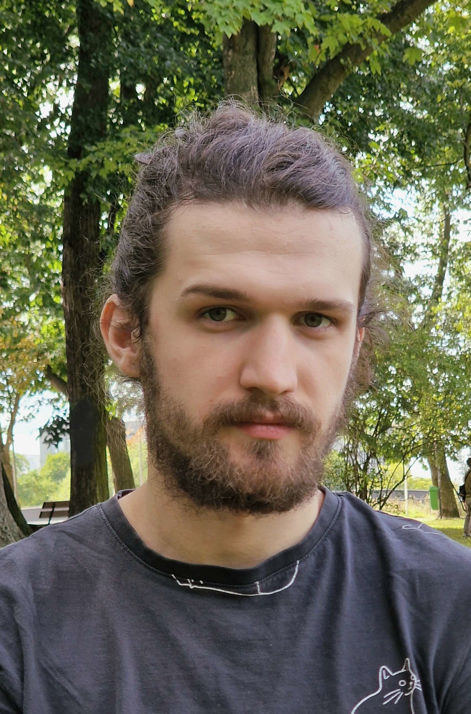

I am a first year master student at the Faculty of Informatics, Masaryk University working in the DIMEA laboratory under the supervision of Dan Kráľ. My main interests are extremal graph theory and combinatorial limits.
Talks
- Uniform Turán Density of 3-uniform Hypergraphs at ISTA workshop on November 24th, 2023 and Summit 280 on July 12th, 2024
Papers
F. Garbe, D. Iľkovič, D. Kráľ, F. Kučerák, A. Lamaison: Hypergraphs with uniform Turán density equal to 8/27, arXiv preprint arXiv:2407.05829.
D. Kráľ, F. Kučerák, A. Lamaison, G. Tardos: Uniform Turán density—classification of palettes, arXiv preprint arXiv:2505.17325.
Teaching
Masaryk University
Autumn 2024
TA in Mathematical foundations of computer science, Graph theory, and Mathematical logic.
Autumn 2023
TA in Mathematical foundations of computer science, and Non-imperative programming.
Autumn 2022
TA in Non-imperative srogramming, and Python seminar.
Spring 2022
TA in Algorithms and Data structures I, and Principles of low-level programming.
Autumn 2021
TA in Foundations of programming.
Contact
kucerak at mail.muni.cz